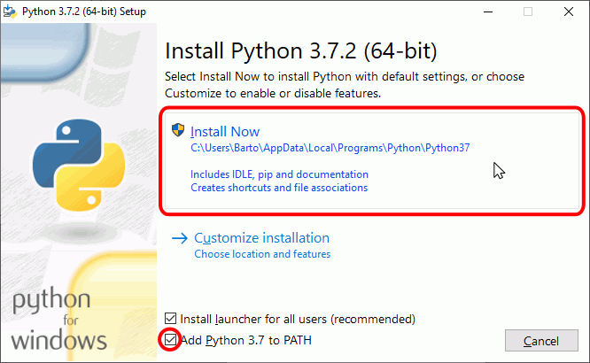
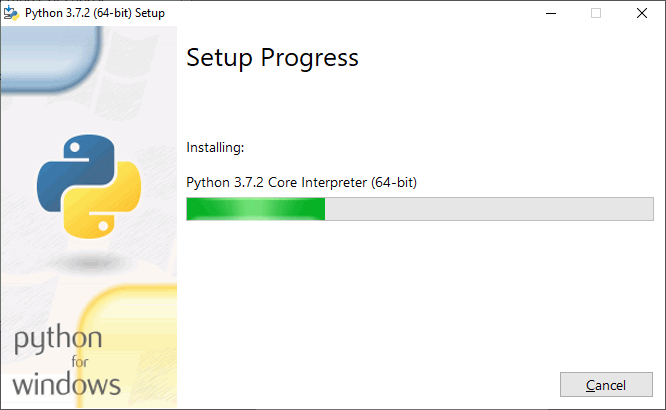
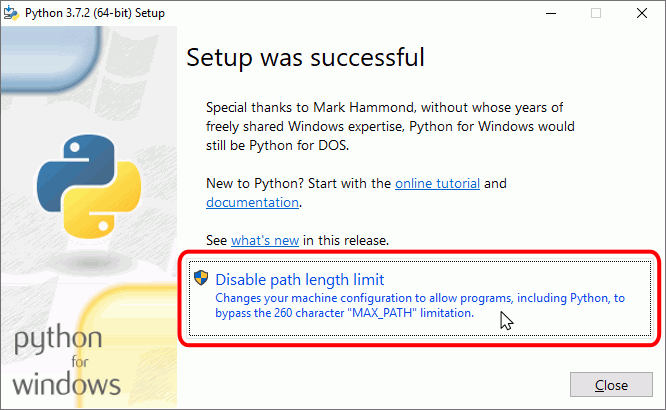
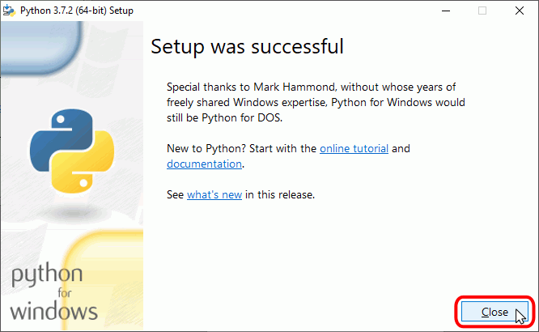
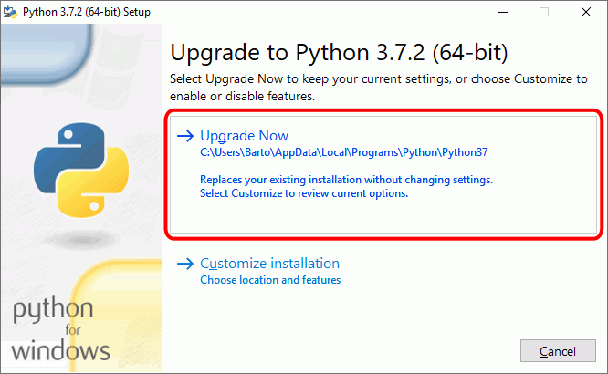
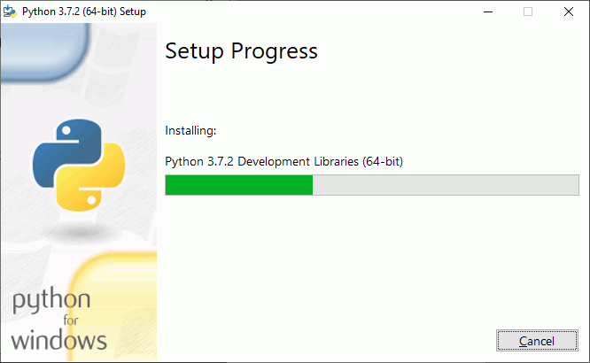
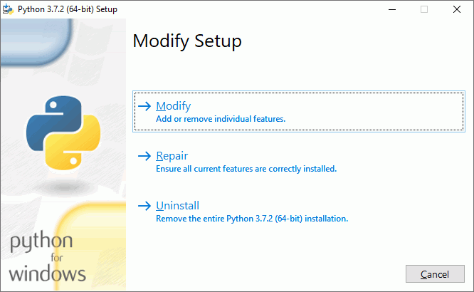

En la lección Historia de Python se comentan las diferentes versión de Python existentes. En esta lección se comenta cómo conseguir e instalar la versión recomendada para seguir este curso.
Python permite tener instaladas distintas versiones de Python (Python 2.7 y Python 3.7, por ejemplo, o Python 3.6 y Python 3.7).
En este curso se recomienda tener instalada únicamente una versión de Python, la más reciente. Por ello, si va a instalar una versión de Python 3.7:
La página oficial de Python es https://www.python.org/.
La última versión de Python 3.7 disponible actualmente (enero de 2019) es Python 3.7.2 (del 24 de diciembre de 2018).
Enlaces:
En cdlibre.org hay una sección dedicada al intérprete de Python, con información detallada sobre las últimas versiones publicadas para Windows.
Una vez descargado el instalador, haga doble clic en él para iniciar la instalación.
Nota: Las imágenes siguientes corresponden a la instalación de Python 3.6.4 (64 bits), pero son similares en cualquier versión 3.6.X.


Si el instalador detecta que Windows tiene activado el límite de 260 caracteres de rutas de archivos (una limitación de versiones antiguas de Windows que se mantiene por compatibilidad con aplicaciones antiguas), le ofrecerá la opción de eliminar la limitación. Si utiliza alguna aplicación que necesite tener ese límite activado, no lo desactive. En caso contrario, haga clic en el botón "Disable path length limit". Si en el futuro descubiera que alguna aplicación necesita tener el límite activado, abra el editor del registro y modifique la clave HKEY_LOCAL_MACHINE\SYSTEM\CurrentControlSet\Control\FileSystem\LongPathsEnabled (el valor 0 significa que el límite está desactivado y 1 significa que está activado).


Una vez descargado el instalador, haga doble clic en él para iniciar la actualización. Si el instalador detecta una subversión anterior de la misma versión de Python (por ejemplo si el instalador de Python 3.7.2 detecta que está instalado Python 3.7.0), ofrecerá la opción de actualizar.
Nota: Las imágenes siguientes corresponden a la instalación de Python 3.7.2 (64 bits), pero son similares en cualquier versión 3.6.X.


Si el instalador detecta que ya está instalada la misma versión de Python (por ejemplo si el instalador de Python 3.7.2 detecta que ya está instalado Python 3.7.2), ofrecerá la opción de modificar, reparar o desinstalar Python.
Nota: Las imágenes siguientes corresponden a la instalación de Python 3.7.2 (64 bits), pero son similares en cualquier versión 3.X.
